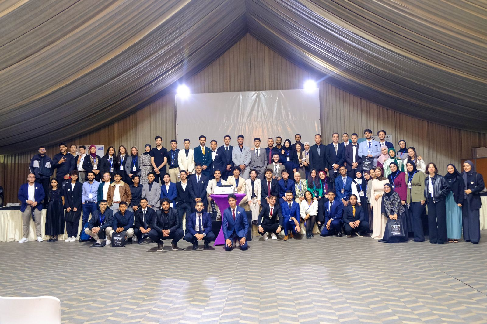

Prestige event
Engineers' Gala.
National and international business leaders and researchers meet newly graduated engineers, to open the professional world and grow their network.
Guest talksRoundtables with CEOsNetworking
Gala teasers on Instagram @vic.enp